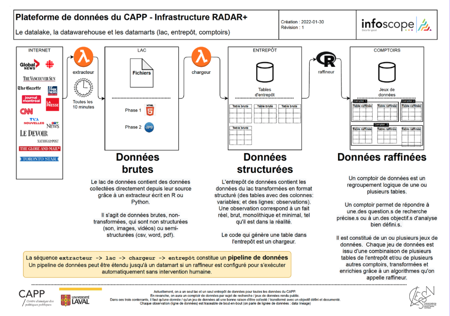

Chaque jour, chaque média tranche : quoi mettre à la Une, quoi reléguer plus bas… et quoi laisser de côté.
Cette hiérarchie, c'est la saillance, utilisée en recherche comme proxy de l'opinion publique et de la sphère politique.
On la commente beaucoup. On la mesure rarement en continu.
Éclatement : l'écosystème se fragmente en murs de péage, réseaux socionumériques, hybridité médiatique, micro-publics.
Algorithmes & personnalisation : les fils sont classés par algorithmes; bulles de filtres et chambres d'écho isolent les publics.
La Une en mouvement : les pages d'accueil se recomposent au fil de la journée, et l'IA générative façonne ce que chacun voit.
62 % des études mesurent la saillance sans la définir. Notre définition :
La saillance médiatique est l'importance relative qu'un objet (enjeu, acteur ou événement) acquiert dans le contenu des médias d'information à un moment donné, telle qu'elle émerge de l'ensemble de la couverture. Attribut relationnel, construit et multidimensionnel : un objet n'est saillant que par contraste avec les autres.
Distincte de la saillance publique (perçue par les publics) et individuelle (accessibilité cognitive), dont elle est l'antécédent médiatique.

Nombre d'articles, part de la couverture, espace éditorial.
Placement (la Une), taille et visuel de l'item, notoriété du média.
Diffusion et convergence entre médias, centralité dans l'agenda.
Survie dans la couverture, tempêtes médiatiques, rythme de mise à jour.
Direction favorable, neutre ou hostile de la couverture.
Quatre paliers calibrés par pays : la distribution des pics de saillance (blocs 4 h, 130 derniers jours), découpée aux percentiles.
Élevé : le tier de la veille quotidienne
Très élevé : top 5 % des pics
Extrême : top 1 %, l'événement rare à l'échelle du pays.
Un « extrême » au Québec n'est pas un « extrême » aux États-Unis.
Un épisode s'ouvre quand le pic d'un objet franchit le seuil Élevé (p80), et dure tant qu'il reste au-dessus. Son niveau est celui de son pic.
En coursTerminé · Les épisodes d'un même événement sont regroupés automatiquement.
« Mark Carney annonce une réplique d'Ottawa aux tarifs de Donald Trump sur l'aluminium »
NER zero-shot et ouvert : repère personnes, enjeux, institutions et lieux, y compris les objets émergents, sans dictionnaire fermé.
LLM open-weight exécuté localement : fusionne les variantes (« D. Trump », « le président américain ») et apparie français ↔ anglais.
Après découpage (wtpsplit) : thèmes (nomenclature CAP), partis politiques canadiens et ton de chaque phrase.
Les unes des médias suivis, reconstituées en direct.
Le palmarès des objets les plus saillants en ce moment.
Les trajectoires d'attention dans le temps, objet par objet.
La carte des objets médiatiques et des liens entre eux.
L'outil de validation des données, en temps réel.
Les épisodes de saillance élevée à extrême, documentés.
Détecter les montées d'attention sur vos enjeux, en temps quasi réel.
Documenter les angles morts : ce qui n'est pas mis de l'avant.
Comparer la couverture entre médias et entre territoires.
Adapter indices, alertes et flux de données à des besoins opérationnels.
Adrien Cloutier · Université Laval
Centre d'analyse des politiques publiques (CAPP)
Partenaires & contributeurs